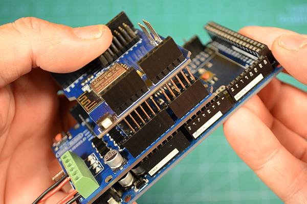
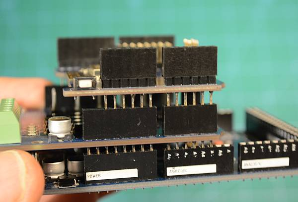

WiFi Setup¶
The purpose of this WiFi solution is for connecting up to 5 WiFi throttles DIRECTLY to the Command Station, elimating the need for a computer and another software controller. However, WiFi is optional. If you wish to simply use your computer connected via a USB cable to to the Command Station using something like JMRI, you can skip ahead to the next page.
Note
This is NOT to make a connection to JMRI. Use a USB cable instead (or wireless USB Bridge like the HC-12). The WiFi and Ethernet solutions are designed to allow throttles to connect directly to the DCC-EX CS without the need for any other software such as JMRI. While using a WiFi/Ethernet connection to JMRI will work, the overhead required internally will slow performance, take up valuable system memory, and prevent broadcast messages for sensors and power state.
There are many ways to add WiFi to your Command Station. We will cover three methods here. You may need to know a little bit about networking, but if you can get your phone and your Roku to connect to your network, you can do this.
You should be able to apply what you learn here to using other boards, but you can ask us for help using any of the contact links on our Support Page if you have a question.
Note that you can click on any of the images to make them larger.
For a video to help you, click below.
Why Use WiFi?¶
BEFORE you purchase a Wifi card, please consider whether you actually need it:
With the base Command Station (CS) consisting of just an Arduino Mega and an Arduino Motor Shield (no WiFi board), you must use a USB cable to connect to a computer to run JMRI or our WebThrottle-EX, or to connect to another controller. The controller (aka Throttle) is what sends commands to the CS to run your trains and control your accessories.
If you intend to run trains from a PC or Raspberry Pi, either by entering <DCC++> commands, by using WebThrottle-EX, JMRI, Rocrail, or similar, then YOU DO NOT NEED WiFi ON THE CS. Save yourself some money, and a lot of hassle, by buying a longer USB cable (or a Wireless USB bridge (HC-12) if you prefer). Using Wifi (OR Ethernet) to talk between JMRI and CommandStation is complex, slow and functionally limited and is therefore NOT SUPPORTED. However, you can STILL use a wireless throttle with a JMRI setup. The computer or Pi you use to run your train software will already have WiFi capability, and you can connect through THAT instead of directly to the CS, while the CS gets its commands through the USB connection.
If you wish to disconnect your PC/Pi and run trains from your phone or tablet using ONLY Engine Driver (or other WiThrottle-protocol devices) connected directly to the CS, then you will need Wifi, and will have to budget some setup and learning time.
Compatible Boards¶
Most boards based on the ESP8266 should work with DCC++ EX. However, with all the variations and software versions out there, we’ve compiled this list of known tested, working hardware. We will add more over time.
Duinopeak ESP8266 WiFi Expansion Board (plus an ESP-01 or 01s)
ESP-01 or ESP-01S Board (This is not a shield. You will need to use jumpers)
Fore more boards you may be able to use, see the WiFi Boards Section
What you will need (for WiFi)¶
A Command Station (CS) made from a Mega and an Arduino Motor Shield
One of the above WiFi boards
Two (2) Male to Female Jumpers (plus 3 more if you are using an ESP-01 or 01s)
Note
While it may be possible to run WiFi on an Uno, Nano or Pro Mini, it is currently not supported. The Uno simply does not have enough memory to run networking in addition to all the other CS features (network code takes about 10kB of progmem and about 2kB of RAM). Also, there is only one hardware serial port. There would be a conflict with the USB port used for logging and connection to software like JMRI being shared.
Quick links¶
Jump to ESP-01 and ESP-01s
Makerfabs ESP8266 WiFi Shield (recommended)¶
We like this board here at DCC++ EX. It is simple, inexpensive, easy to use, and it works.

Figure 1 - Makerfabs ESP8266 WiFi Shield
Installing the board follows the same procedure in the previous section on assembly. Start by noting the tab end of the board and align it with the tab end of the motor board. You will stack this board on top to make a three board stack.
Remove the plastic jumpers¶
Note the two black plastic jumpers: we need to remove both of them. You can pull them off with your fingers or needle nose pliers and either stick them in a drawer or move them to the side by having them connect via one side to any of the row of Rx pins. The other end of the connector will just hang out over the Wifi Board.

Figure 2 - Remove the plastic jumpers
Align the boards¶
Turn the board so that the tab end is to the left and the power connectors on the other boards are to the right. You will be looking at the left side of the shield. Align it so that the pins align starting with the tab end of the boards. The Rx, Tx, 2, 3, 4, 5, 6, 7 pins on the Motor Shield line up with the 0 through 7 pins on the Makerfabs WiFi Board. Start to get this row partially seated so all the pins are lined up with the holes. Note that there are more holes than pins. The two header holes closest to the power connectors will be empty.

Figure 3 - Get the left side pins aligned
Seat the boards¶
Now do the the other side. If all the pins are straight and lined up properly, hold both sides of the board and press it together gently (Figure 4). Note that the pins are quite long and will not go all the way into the header. You should have even more of the pins showing between the bottom of the WiFi board and the top of the header on the Motor Board than between the Motor Board and the Arduino. This is normal (see Figure 5).
{kind=link}
Figure 4 - Get the right side pins aligned
{kind=link}
Figure 5 - Fully seated boards
Install the jumper wires¶
We now need to connect The Transmit (Tx) and Receive (Rx) pins on the ESP8266 to the Rx and Tx pins for Serial1 on the Mega. The Mega has one serial port connected to the USB port, and then 3 extra ones we can access from pins on the board. You can think of Tx as “talking” and Rx as “listening”. That will help you remember that if one thing is talking, the other has to use its ears to listen. So we must connect the Tx of the WiFi board to Rx1 on the Mega and the Rx pin on the WiFi Board to Tx1 on the Mega.
There are three rows of pins on the Makerfabs WiFi shield. The middle pins each connect to one of the first 8 pins on the header. Pin 0 goes to header pin 0, pin 1 goes to header pin 1, and so on. We aren’t going to need those. With the plastic jumpers removed, nothing will be connected to any of those pins on the WiFi Board, and therefore not connected down to the Mega through the Motor Shield.
ALL of the pins in the row marked Tx (the row closest to the header) are connected to the Tx pin of the ESP8266. ALL of the pins in the row marked Rx (the row closest to the middle of the board) are connected to the Rx pin on the ESP8266.
Take a jumper wire and connect it to any one of the Tx pins on the WiFi Board, and connect the other end to the Rx1 pin on the mega (pin 19).
Take a second jumper wire and connect it to any one of the Rx pins on the Wifi Board and connect the other end to Tx1 on the mega (pin 18).

Figure 6 - Install the jumper wires
Note
The screenprinting on the board may make it hard to see which pins are 18 and 19, they may not be aligned exactly. Count the pins if you need to to make sure that you are using the correct ones.
Duinopeak ESP8266 WiFi Expansion Board¶
This board is designed as an expansion/prototyping board as well as a WiFi board. Tinkerers that want the extra space on the board to solder your experiments can have a party on the PCB! The only caveat with this board is that it cannot easily be connected in “passthrough mode” if you needed to use the Arduino to test a direct connection to the onboard ESP8266. It does not like the USB cable connected at the same time as a signal is on the Tx/Rx pins. This is a minor issue and does not affect normal operation since you won’t have anything connected to the USB port.
Note
This is just a carrier board for an ESP-01 or 01s. You will still need an ESP-01s to place onto this board. See the next section.

Figure 7 - Duinopeak WiFi Board
Install the Shield¶
To install this board on your Arduino, follow the same steps as above, with the added step of installing an ESP-01s onto the board:
Remove or place the plastic pin jumpers to the side
Align and seat the board
Use wire jumpers to connect any Rx pin to Tx1 on the Mega, and any Tx pin to Rx1 on the Mega
Seat an ESP-01s onto the 8 pin header on the board, oriented with the white ESP-01 outline
ESP-01 and ESP-01s¶
This is the board that started it all. It fueled the WiFi revolution in small devices. In fact, this little board is actually a microcontroller that is more powerful than the Arduno Uno! The difference between the 01 and the 01S is primarily that there is more memory on the 01-“S”. Since the 01 version has been retired, any new board you get should be the 01s, but either will work.

Figure 8 - ESP-01s
Install the Module¶
Below is a wiring diagram for connecting the ESP8266 to the Arduino. For clarity, the image does not show the motor board already on top of the Mega, but since the headers connect all the pins together vertically, you can find the same pins on the motor board to get the 3.3V and Gnd to power the ESP8266.

Figure 9 - Wiring an ESP-01s to a Mega
Wiring
Arduino ESP8266
3.3V -----> Vcc
3.3V -----> CH_PD
Gnd -----> Gnd
Tx -----> Rx
Rx -----> Tx
In order to connect both Vcc and CH_PD to the 3.3V output of the Arduino, you can make a “Y” shaped jumper or put the ESP-01s on a small circuit board and wire it that way. Below are little boards you can buy called “ESP-01 Breakout Board” or “ESP-01 Breadboard adapter”. Some even have a voltage regulator so you can use the 5V power from the Mega instead of 3.3V, and “level shifters” to adapt the IO pins from 5V to 3.3. We highly recommend these little boards. In Figure 10 below, the board on the left is just a plain breadboard adapter. The other two boards have the regulator and logic level shifters.
Note
About current requirements: While we at DCC-EX Labs have had success with running the ESP-01s off the 3.3V Mega power supply, this is at the limit of what the Mega can supply. The Mega 3.3V regulator is only rated for 200mA. The ESP can exceed this in short bursts. If you want to be safe, you can power a 5V to 3.3V regulator from the 5V supply, or find another way to provide clean, regulated 3.3V to the ESP.

Figure 10 - ESP-01 Breakout Boards.
Warning
The ESP8266 chips are designed for 3.3V. DO NOT TRY TO CONNECT THEM TO 5V!! While they cannot handle 5V for power, their GPIO pins are 5V tolerant. Because of this, you don’t need any additional circuitry. However, to be safe, you can use a small level shifter board, or use one of the breakout boards like the one above and to the right that has a 3.3V regulator and level shifters for the Tx and Rx pins.
Install the Software¶
If you already have the CS software running and are just adding WiFi, there is nothing further you need to do if you want to use the CS as an Access Point (AP) and connect a WiThrottle compatible CAB (Engine Driver). The next time you power up the CS, it will automatically find your WiFi board and which port it is connected to. See the detailed instructions here: WiFi Configuration
If you are setting up your Command Station for the first time, or are making changes to the basic setup, navigate to Command Station Downloads to load firmware onto the CS.